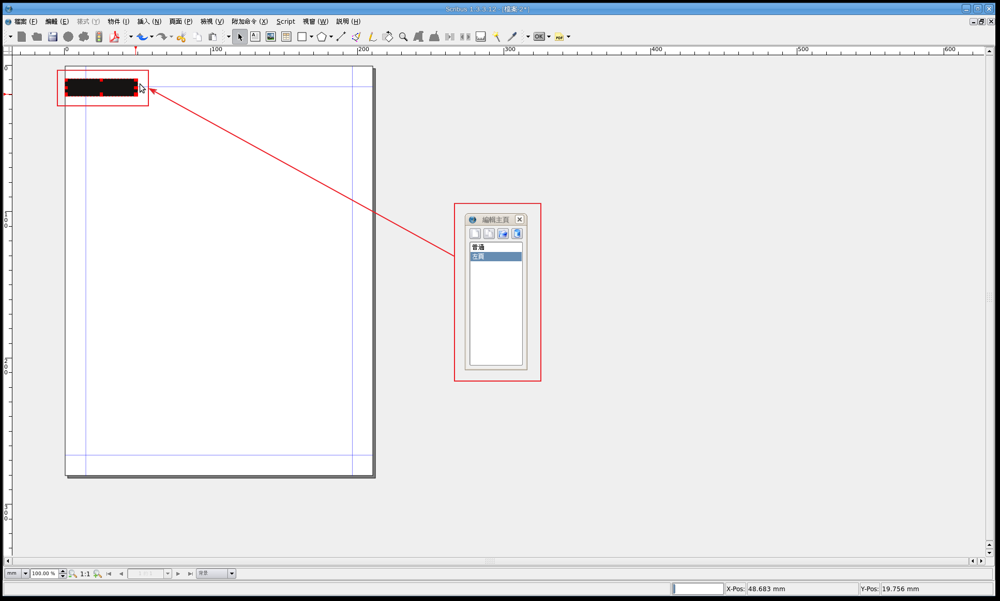
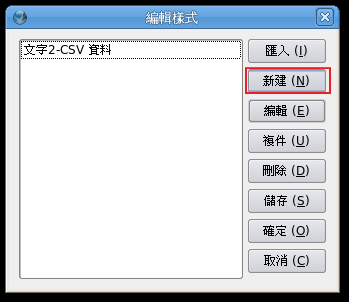

也紀念我們永遠的朋友 李士傑先生（Shih-Chieh Ilya Li）。
開放源碼桌面排版軟體 Scribus（2）
在上次文章中，我們看過了 Scribus 的基本操作，包括：安裝、圖片框、文字框、表格和形狀的使用。靠著上述的操作，我們已經能夠排出基本的單頁文件。這次我們就來將之前所學到的技巧應用在多頁文件上，並進一步學習 Scribus 的進階操作技巧。學會這些操作後，我們在桌面排版上就能算是初窺堂奧了。
※ 開啟新的多頁文件
既然我們要開始學習如何排版多頁文件，開門第一件事當然就是開一份新的多頁文件了。請選擇【檔案】->【新建】來開啟「新建檔案」視窗。
進入「新建檔案」視窗後，請先從「文件樣式」區域中選擇「雙邊」，然後請依自己的需求設定右方設定。在這裡我們使用的是美式雜誌常用的尺寸 210mm * 280mm，預設版面為「雜誌」，而裡面則預留 20mm 裝訂邊。頁面數則視需要調整。
※ 設定主頁
排版多頁文件最重要的事情就是設定主頁。「主頁」(main page) 是用來讓你調整整份文件中，每頁都一樣的固定版式。只要設定好主頁，遇到固定形式的版面時，就只要直接套用主頁設定即可。要設定主頁，請選擇【編輯】->【主頁…】
※ 新增主頁
按下【編輯】->【主頁…】後，我們就會看到「編輯主頁」視窗，請選擇最左上方的按鈕新增一個主頁。
由於我們想要排多頁文件，左右頁版面必然會有所差異，因此我們要為左、右頁各建立一個主頁，如果你的版面多樣，甚至可以為左、右頁各建立數種主頁。我們現在先來建立一個左頁主頁。請在「新建主頁」視窗出現後，在名稱欄位為這個新主頁取一個名稱，方便以後辨視。接著在下方的下拉式選單選擇左頁後，按一下〔確定〕按鈕。
接著我們就可以看到主視窗中出現一個單頁畫面，這就是你新建的主頁了。請確定「編輯主頁」視窗中，想要編輯的主頁在選擇狀態。之後我們就可以用之前學過的方式開始編固定的版面了。

建立好左頁主頁後，請依上述方式繼續建立右頁主頁。

圖中是筆者建立好的右頁主頁，其中包括了紅色書眉、數條參考線和下方文字框中的聯絡資訊和頁碼。
※ 管理參考線
我們在上次的教學中學過如何由尺標拉出參考線來。這種方式在臨時要使用參考線時非常方便。不過缺點是難以精準與統一。因此如果版面上有固定使用的參考線，你可以在主頁中，使用「管理參考線」功能預先畫好排版時會使用到的參考線。要使用這個功能，請選擇【頁面】->【管理參考線…】。
接著我們就可以看到「管理參考線」視窗，增加參考線的方式是先按一下〔增加〕按鈕，然後在 X 或 Y 座標上設定你要加入參考線的位置，然後按一下底部的〔更新〕按鈕，你就可以看到參考線出現在頁面上。這種方式有兩個好處：第一是你可以精準地設定參考線的位置；第二則是既然我們已經知道頁面的長寬和留白（因為是我們自己設定的），我們就可以推算其他參考線的位置。例如：我現在知道我的頁面寬是 210mm，而四周留白 20mm，那麼如果我想要一個兩欄式版面，中間相距 5mm 的話，我就可以在這裡先設定「105mm」（中心點，210/2）、「107.5mm」（右欄邊界，105+2.5）、「102.5mm」（左欄邊界，105-2.5）三條參考線。
設定好參考線後，就可以退出主頁，回到排版視窗將我們設定好的主頁套用在對應的頁面上。請在要套用的頁面上按一下滑鼠右鍵，然後選擇【套用主頁】。
然後請在右上方選擇左、右頁，接著選擇你要套用的頁面，由於在這個版面中，右頁都是奇數頁，所以在這裡我選擇了「奇數頁面」。選擇好用請按一下〔確定〕按鈕。
按下按鈕後，你就可以看到我們選擇的主頁設定已經套用在排版頁面上了。
※ 製作封面
接下來我們來用上次學過的技巧來為這份文件做個簡單的封面。請在第一頁建立一個佔滿整頁的圖片框，然後插入你想使用的圖片。你可能會覺得用滑鼠直接拉一個佔滿整頁的框線不太容易，因此我們可以先隨便拉個圖片框並插入圖片後，在框內按一下滑鼠右鍵，然後直接將「X, Y, Z」欄位中的「寬度」和「高度」設定為和版面相同的大小。
接著只要運用插入圖形、文字框和圖片框，我們就可以做出一個簡單的封面來了。

※ 內文排版
既然封面簡簡單單就完成了，我們就開始來排內文吧。請回到下方內文頁面，並使用文字框和圖片框大概拉出你想要的版面。由於上一次我們排的是單一頁面的文件，並不需要使用到樣式。不過如果你在排多頁文件時，還像之前一樣手工設定樣式的話，那可會累死的。因此現在我們就來看看如何設定樣式，這樣我們就可以在後面的排版中直接套用我們設定好的樣式了。
※ 樣式設定
將你要排版的文字匯入後，請在文字框中按一下滑鼠右鍵並選擇【編輯文字…】。
由於我們之前都沒使用過樣式，因此現在並沒有樣式可以直接套用，我們就先來幫內文設定一個新的樣式吧。請在左方的樣式欄中按一下滑鼠右鍵，並選擇【編輯樣式…】。

接著在「編輯樣式」視窗中，按一下〔新建〕按鈕。

接著會出現另一個「編輯樣式」視窗，請先幫你的樣式取個相應的名稱，這樣之後就可以立刻判斷樣式該使用在什麼地方。然後依照自己想要的樣式調整「字元」和「距離」區域的設定，如果你想使用「首字下沉」（首字母變大）的話，也可以選擇後設定。將要使用在內文的樣式都設定好後，請按一下〔確定〕按鈕。
※ 套用樣式
設定好樣式後就可以回到「故事編輯器」視窗，請將要使用樣式的內文選取後，在上面下拉式選單選擇你所要套用的樣式。
選好後，你就可以看到排版視窗中對應的內文已經依照你剛剛所使用的樣式排版好了。
你可以為不同的欄位設定不同的樣式，這樣在之後遇到相同的欄位時，就不需再設定一次樣式了。例如圖中左頁最左方的邊欄、內文行文和標題就各擁有不同的樣式。
※ 文繞圖
在排版實務中，文繞圖不但常用，而且用得好的話，還可以輕鬆就創造出美觀的版面。要在 Scribus 中使用文繞圖，請插入一個圖片框，然後在框內按一下滑鼠右鍵呼叫「屬性」視窗。接著在「形狀」欄位中選擇「字體環繞框」，其下有兩個選項，選擇「使用輪廓線條」的話，文字不是直接繞著框體運行，而是輪廓線，如此一來你就可以利用輪廓線和框體之間的大小差別來空出圖文間隔。如果選擇「使用限制方框」的話，文字就會直接貼著圖片框繞行，圖文中間不會有空隙。
在這裡我們選擇「使用輪廓線條」來使圖文間能有美觀的留白。選好後請在「形狀」欄位中，按一下〔編輯形狀〕按鈕，並選擇「編輯輪廓線」。然後你就可以用圖片周圍的藍框（輪郭線）隔出圖和文之間的空隙。這種方式除了可以用在圖文繞行之外，也可以讓一個文字框中的文字繞著另一個文字框運行，藉此做出排版上的變化，圖中左上方就是這種應用。
如果你想讓文字繞行不規則的去背圖，我們可以利用「編輯輪廓線」中最上排的節點和控制點按鈕來使輪廓線能與不規則圖案相符。這時要記得每一個角都需要一個節點，而控制點可以調整輪廓線彎曲的弧度。
註：要使文繞圖發生效果，文字所繞行的物件必須在圖層最上層。
運用以上這些技巧，我們就可以排出看起來頂不賴的文件了。
（待續）
您也許有興趣閱讀以下文章:
- 開放源碼桌面排版軟體 Scribus（1） - 2009-08-23
E-Mail：contact@openfoundry.org Address：台北市南港區研究院路2段128號 中央研究院資訊科學研究所 . 隱私權條款. 使用條款